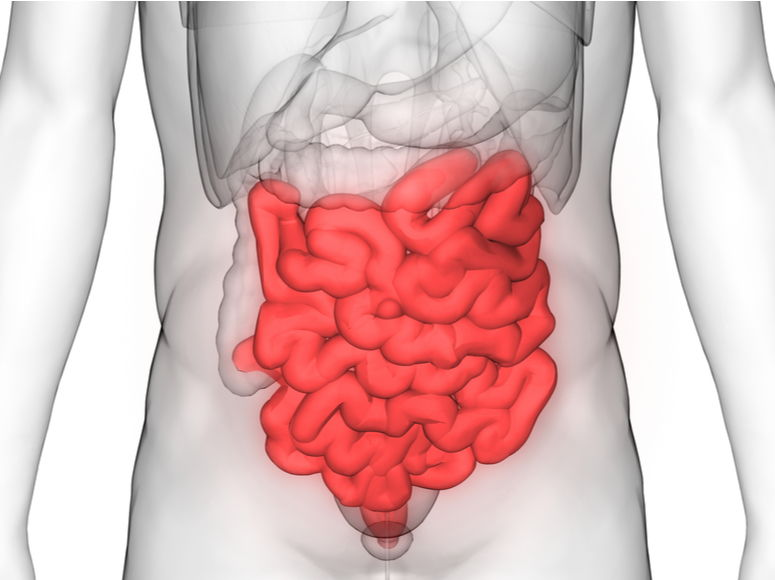

El aparato digestivo está formado por el tracto gastrointestinal, también llamado tracto digestivo, y el hígado, el páncreas y la vesícula biliar. El tracto gastrointestinal es una serie de órganos huecos unidos en un tubo largo y retorcido que va desde la boca hasta el ano. Los órganos huecos que componen el tracto gastrointestinal son la boca, el esófago, el estómago, el intestino delgado, el intestino grueso y el ano. El hígado, el páncreas y la vesícula biliar son los órganos sólidos del aparato digestivo.
DIGESTIÓN
La digestión es importante porque el cuerpo necesita los nutrientes provenientes de los alimentos y bebidas para funcionar correctamente y mantenerse sano. Las proteínas, las grasas, los carbohidratos, las vitaminas , los minerales y el agua son nutrientes. El aparato digestivo descompone químicamente los nutrientes en partes lo suficientemente pequeñas como para que el cuerpo pueda absorber los nutrientes y usarlos para la energía, crecimiento y reparación de las células.
BOCA
La boca o cavidad oral es el lugar por donde los alimentos comienzan su viaje a través del aparato digestivo, contiene diferentes estructuras, entre ellas los dientes que hacen posible la masticación y la lengua. Cerca de la boca se encuentran las glándulas salivales que producen saliva, la cual se mezcla con los alimentos, facilita la masticación, la deglución y ayuda a mantener los dientes limpios.
FARINGE
La faringe es una estructura con forma de tubo, está situada en el cuello y revestida de membrana mucosa; conecta la cavidad bucal y las fosas nasales con el esófago y la laringe respectivamente. Por ella pasan tanto el aire como los alimentos, por lo que forma parte del aparato digestivo y del aparato respiratorio. Ambas vías quedan separadas por la epiglotis, que actúa como una válvula. En el ser humano la faringe mide unos trece centímetros de largo y se extiende desde la base externa del cráneo hasta la sexta o séptima vértebra cervical, por delante de la columna vertebral.
ESÓFAGO
El esófago es un conducto que se extiende desde la faringe hasta el estómago. De los incisivos al cardias (porción donde el esófago se continúa con el estómago) hay unos 40 cm. El esófago empieza en el cuello, atraviesa todo el tórax y pasa al abdomen a través del orificio esofágico del diafragma. Habitualmente es una cavidad virtual (sus paredes se encuentran unidas y solo se abren cuando pasa el bolo alimenticio). El esófago alcanza a medir 25 cm y tiene una estructura formada por dos capas de músculos, que permiten la contracción y relajación en sentido descendente del esófago, estas ondas reciben el nombre de movimientos peristálticos y son las que provocan el avance del alimento hacia el estómago.
ESTÓMAGO
El estómago es un órgano en el que se acumula comida. Varía de forma según el estado de repleción (cantidad de contenido alimenticio presente en la cavidad gástrica) en que se halla, habitualmente tiene forma de "J". Consta de varias partes que son: fundus, cuerpo, antro y píloro. Su borde menos extenso se denomina curvatura menor y la otra, curvatura mayor. El cardias es el límite entre el esófago y el estómago y el píloro es el límite entre el estómago y el intestino delgado. En un individuo de tamaño medio mide aproximadamente 25 cm del cardias al píloro y el diámetro transverso es de 12 cm.
PÁNCREAS
Es una glándula íntimamente relacionada con el duodeno, produce jugo pancreático que se vierte al intestino a través del conducto pancreático, sus secreciones son de gran importancia en la digestión de los alimentos. El páncreas segrega también hormonas como la insulina que pasan directamente a sangre y ayudan a controlar el metabolismo de los azúcares.
HÍGADO
El hígado es la mayor víscera del cuerpo. Pesa 1500 gramos. Consta de cuatro lóbulos, derecho, izquierdo, cuadrado y caudado; los cuales a su vez se dividen en segmentos.
Las vías biliares son las vías excretoras del hígado, por ellas la bilis es conducida al duodeno. Normalmente los conductos hepáticos derecho e izquierdo confluyen entre sí formando el conducto hepático común. El conducto hepático común, recibe un conducto más fino, el conducto cístico, que proviene de la vesícula biliar. De la reunión de los conductos císticos y el hepático común se forma el colédoco que desemboca en el duodeno junto con el conducto excretor del páncreas.
VESÍCULA BILIAR
La vesícula biliar es una víscera hueca pequeña situada en la cara inferior del hígado. Su función es la de almacenar y concentrar la bilis segregada por el hígado, hasta ser requerida por los procesos de la digestión. Cuando se contrae expulsa la bilis concentrada hacia el duodeno a través del conducto cístico. Es de forma ovalada o ligeramente piriforme y su diámetro mayor oscila entre 5 y 8 cm.
INTESTINO
| Intestino Delgado | Intestino Grueso |
|---|---|
|  | |
| En el intestino delgado se absorben los nutrientes de los alimentos ya digeridos. El tubo está repleto de vellosidades que amplían la superficie de absorción. El intestino delgado se divide en dos partes, la primera es el duodeno que tiene una longitud de 30 cm y la segunda es el yeyuno-íleon que mide 6 metros y medio. | El intestino grueso se divide en varias porciones que se denominan ciego, colon ascendente con una longitud de 15 cm, colon transverso con una longitud media de 50 cm, colon descendente con 10 cm de longitud, colon sigmoideo, recto y ano. El recto es la parte terminal del tubo digestivo. |
ANO
El ano es la abertura final del tracto digestivo. Consta de una esfinter anal externo y otro interno que tienen la función de controlar el proceso de expulsión de las heces al exterior. El funcionamiento inadecuado de los esfínteres del ano puede provocar incontinencia fecal.
Bibliografía